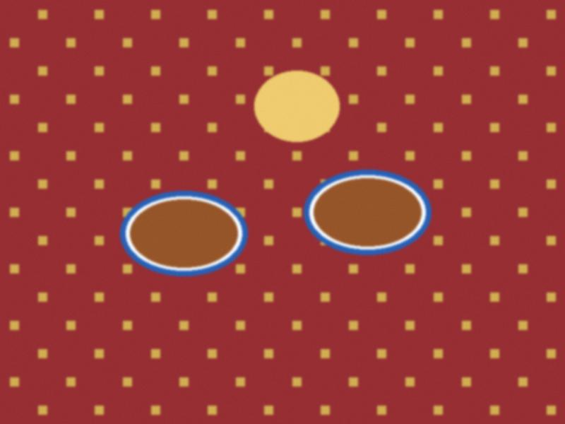
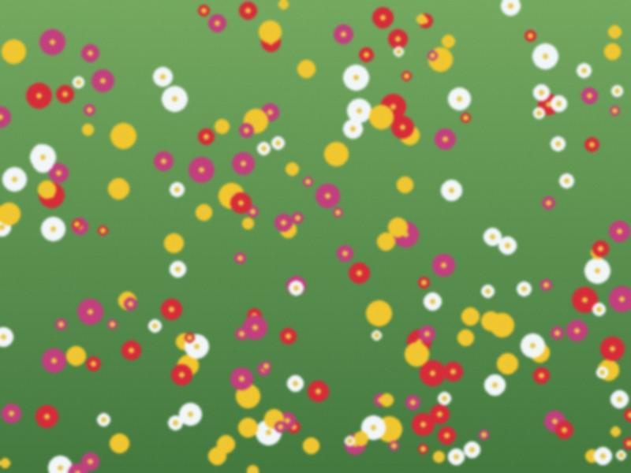

On the 27th of June the network was opened again. On the 28th my daughter read the blog for the first time in two years.
The segment is shut and the words come through the post: in e-mail, in pieces, from Vika.
A small birthday, a big table and three video calls that did not come through.

Since October the blog has had two kinds of readers: those in Irad, and the others. The others cannot see it.
Nine days in December, a suitcase of Korean chili flakes and the best kimchi week of my life.
My grandson showed me a dance. I understood nothing. Then I understood everything.
Forty days at home, a vegetable garden and a message from Seoul every morning.

Tulpar, the chat that all the grandchildren are on, and my first message in it.